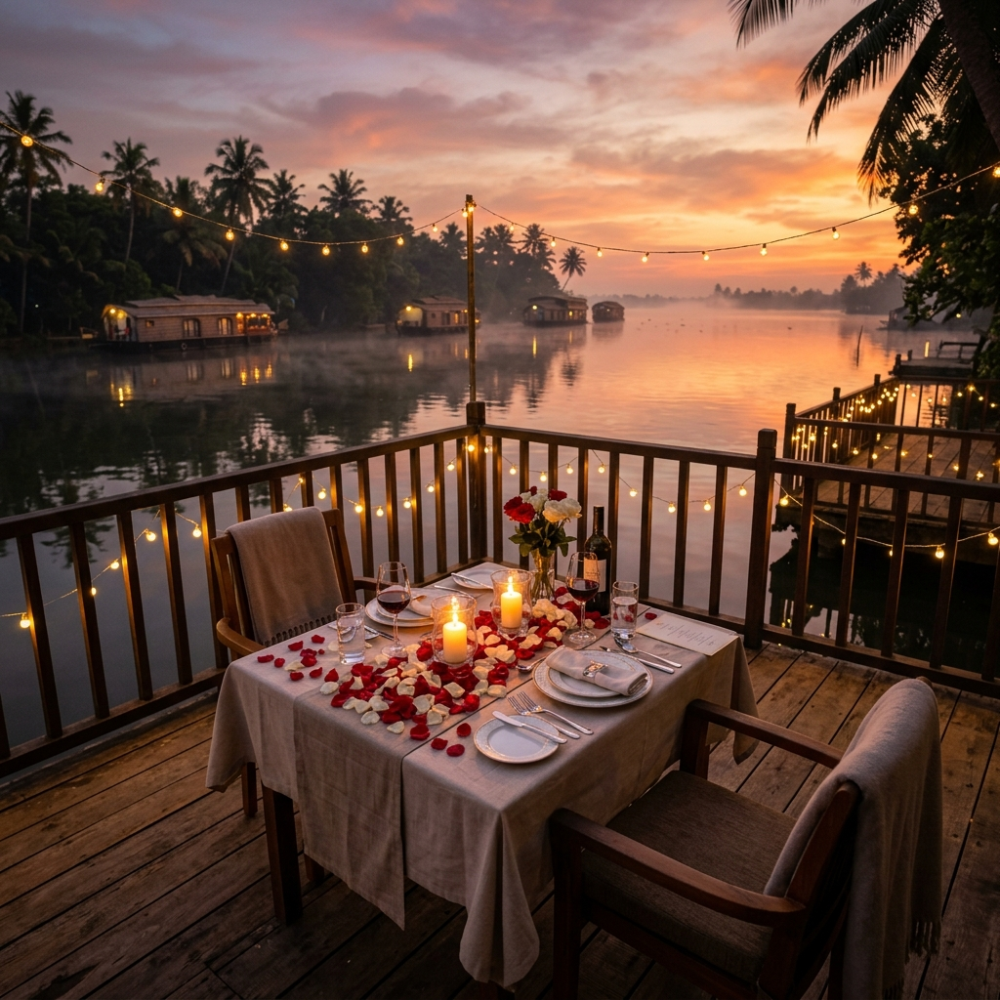

A Premium Local Sightseeing Experience by Thekkady Trips
Discover the breathtaking beauty of Thekkady and the scenic countryside of Tamil Nadu in one comfortable private jeep tour. Thekkady Trips proudly offers one of the best local sightseeing programs in the region, designed with excellent service, comfortable travel, beautiful viewpoints, and memorable experiences for every guest.

Experience the best of both worlds in a single 4-hour private jeep expedition. Starting from Kumily/Thekkady, you'll first ascend to panoramic hill viewpoints overlooking misty valleys, before descending into the vibrant, sun-kissed agricultural countryside of Tamil Nadu.
Suitable For: Families, Couples, Friends & Small Groups seeking a relaxed, scenic, and culturally diverse sightseeing journey with complete private vehicle comfort.
Guests will be picked up from their hotel, resort, or homestay in the Thekkady / Kumily town area at your scheduled preferred time in a private 4x4 Jeep.
Enjoy spectacular panoramic views of deep valleys, rolling hills, dense forest canopy, and the cool mountain breeze. This is acclaimed as one of the most scenic hill viewpoints in Thekkady.
Visit the scenic watch tower and experience breathtaking 360-degree views of the surrounding Western Ghats mountains and forest landscapes. Ideal for photography and relaxation.
Explore this famous engineering attraction—massive water pipelines carrying power generation waters from Periyar lake down into Tamil Nadu, surrounded by lush greenery and scenic hills.
Stop at a peaceful canal viewpoint, perfect for enjoying rural nature, watching canal water flows, and capturing memorable family photographs.
Experience the fresh countryside atmosphere and witness local vegetable cultivation practices, lush cabbage, onion, and chili fields up close.
Walk directly through beautiful grape plantations with hanging purple grape bunches, taste fresh farm juice, and enjoy the charming rural landscape of Tamil Nadu before returning comfortably to Kumily.
Private vehicle hire for your group with zero sharing, ensuring 100% privacy and comfort.
Scenic route through high-range hill switchbacks, spice plantations, and rural countryside roads.
Plenty of time at each landmark for photo sessions, walking through farms, and relaxation.
Courteous, seasoned local driver who provides insightful commentary throughout the journey.
Mountain Adventure Thekkady is committed to providing a better sightseeing experience than ordinary local tours. We proudly assure our guests that we offer one of the finest local sightseeing programs in Thekkady and the Tamil Nadu border region:
Instant Confirmation on WhatsApp